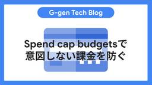
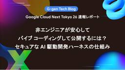
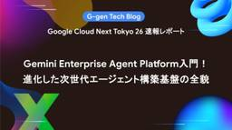

G-gen Tech Blog
https://blog.g-gen.co.jp/
Google Cloudの情報発信を行う技術ブログ
フィード

Gemini Enterpriseでライセンス数を削減する方法
G-gen Tech Blog
G-gen の菊池です。Gemini Enterprise のサブスクリプションでライセンス数を削減しようとした際に直面するエラーと、その解決策について解説します。 事象 原因 ライセンス削減の仕様制限 サブスクリプションを新規作成する際の壁 対処の手順 概要 手順1: 自動更新の停止 手順2: 契約の期限切れを待つ 手順3: 新しいサブスクリプションの購入 手順4: ライセンスの自動更新 事象 Google Cloud の請求先アカウントに紐づく、Gemini Enterprise のサブスクリプション（月間プラン、または年間プラン）を利用している環境を想定します。 利用者の減少などにより、…
2日前

Partner Cross-Cloud Interconnect for AWSを解説
G-gen Tech Blog
G-gen の松尾です。当記事では、Google Cloud と Amazon Web Services（AWS）をプライベートに接続する Partner Cross-Cloud Interconnect for AWS について解説します。 概要 Partner Cross-Cloud Interconnect for AWS とは 対応リージョン transport リソース Cross-Cloud Interconnect との比較 料金 接続方式 接続方式の違い VPC ネットワークピアリング Network Connectivity Center 2 つの方式の比較 接続の表示・更新…
3日前

Spend cap budgetsで意図しない課金を防ぐ
G-gen Tech Blog
G-gen の武井です。当記事では Cloud Billing の新機能である Spend cap budgets を用いて、意図しない課金を防ぐ方法を解説します。 はじめに Spend cap budgets とは パートナーの請求先アカウントでの使用について 対象サービス 制約 必要な権限 設定方法 予算の作成 1. 定義 2. 範囲 3. 金額 4. 操作 動作確認 確認内容 Cloud Run 50% 到達時 80 % 到達時 100 % 到達時 一時停止解除 Gemini Enterprise Agent Platform はじめに Spend cap budgets とは Spen…
4日前

IAM拒否ポリシーを使用してAgent Runtimeのエージェントへのアクセスを制限する
G-gen Tech Blog
G-gen の佐々木です。当記事では、Agent Runtime にデプロイしたエージェントの呼び出し元を IAM 拒否ポリシーで特定のプリンシパルのみに制限する方法を、Gemini Enterprise アプリからの接続を例に紹介します。 前提知識 Agent Runtime とは Gemini Enterprise とは IAM ポリシーの仕組み 当記事のシナリオ アクセス制限の考え方 エージェントの呼び出しに必要な権限 Gemini Enterprise の呼び出し元 ID 制限に使用する2つの IAM 機能 リソースレベルの IAM ポリシーによる許可の最小化 IAM 拒否ポリシーによ…
5日前

非エンジニアが安心してバイブ コーディングして公開するには？セキュアなAI駆動開発ハーネスの仕組み(Google Cloud Next Tokyo 26セッションレポート)
G-gen Tech Blog
G-gen の高宮です。当記事は、Google Cloud Next Tokyo 26 の2日目に行われたカスタマーセッション「非エンジニアが安心してバイブ コーディングして公開するには？セキュアな AI 駆動開発ハーネスの仕組み」のレポートです。 他の Google Cloud Next Tokyo 26 の関連記事は Google Cloud Next Tokyo 26 カテゴリの記事一覧からご覧いただけます。 セッションの概要 生の AI 駆動開発の問題点 AI 駆動開発ハーネス「Exoloop」 Exoloop とは Exoloop が提供する主な Skill 群 バイブ コーディング…
5日前

CDPだけで顧客理解は不十分？Google Cloudと生活者データで実現する”Why 分析”最前線(Google Cloud Next Tokyo 26セッションレポート)
G-gen Tech Blog
G-gen の奥田です。当記事は、Google Cloud Next 26 Tokyo の1日目に行われたカスタマーセッション「CDP だけで顧客理解は不十分？Google Cloud と生活者データで実現する「Why 分析」最前線」のレポートです。 他の Google Cloud Next Tokyo 26 の関連記事は Google Cloud Next Tokyo 26 カテゴリの記事一覧からご覧いただけます。 セッションの概要 データはあるのに顧客が見えない データの量ではなく種類が足りない 再発する 5 つの症状 Why を補ってきた「勘と経験」の正体 5W1H を同時に読む力 勘と…
5日前

Gemini Enterprise Agent Platform入門！進化した次世代エージェント構築基盤の全貌(Google Cloud Next Tokyo 26セッションレポート)
G-gen Tech Blog
G-gen の今村です。当記事は、Google Cloud Next Tokyo 26 の2日目に行われた Google セッション「Gemini Enterprise Agent Platform 入門！進化した次世代エージェント構築基盤の全貌」のレポートです。 他の Google Cloud Next Tokyo 26 の関連記事は Google Cloud Next Tokyo 26 カテゴリの記事一覧からご覧いただけます。 セッションの概要 Gemini Enterprise Agent Platform とは サービス提供の背景 機能の全体像 Build（構築） 概要 Model G…
5日前

2026年7月のイチオシGoogle Cloud・Google Workspaceアップデート
G-gen Tech Blog
G-gen の杉村です。2026年7月に発表された、Google Cloud や Google Workspace のイチオシアップデートをまとめてご紹介します。記載は全て、記事公開当時のものですのでご留意ください。 はじめに Google Cloud Next Tokyo 26 の開催 Google Cloud のアップデート Bigtable で Google フロントエンドをバイパスする Direct connectivity が登場 Gemini Enterprise app で東京リージョン（asia-northeast1）がサポート Cloud Run でサブプロセスとしてのサンド…
6日前

ツール導入ではない、企業のスタイルを創る「AI戦略」としてのGemini Enterprise(Google Cloud Next Tokyo 26セッションレポート)
G-gen Tech Blog
G-gen の今村です。当記事は、Google Cloud Next 26 Tokyo の1日目に行われたカスタマーセッション「ツール導入ではない、企業のスタイルを創る「AI 戦略」としての Gemini Enterprise」のレポートです。 他の Google Cloud Next Tokyo 26 の関連記事は Google Cloud Next Tokyo 26 カテゴリの記事一覧からご覧いただけます。 セッションの概要 AI イノベーションラボの取り組みと背景 業務への AI の組み込み 自作 AI ツールの展開と終了 Gemini Enterprise の選定理由 検索精度とガバナ…
9日前
Google Cloud Next Tokyo 26 速報レポート - キーノート（1日目）
G-gen Tech Blog
G-gen の杉村です。当記事では、Google Cloud Next Tokyo 26 の、1日目のキーノートに関する速報レポートをお届けします。 Google Cloud Next Tokyo 26 イベント概要 キーノートの概要 AI による産業の革新 NTTデータの事例 Google の AI エージェントエコシステム Gemini Enterprise のデモ 損害保険ジャパンの事例 Ｓｋｙの事例 スクウェア・エニックスの事例 Agentic Workplace の実現 AI 時代のサイバーセキュリティ 関連記事 Google Cloud Next Tokyo 26 イベント概要 G…
9日前
AutoMLバッチ推論のクォータ上限エラーと対処法
G-gen Tech Blog
G-gen の min です。Gemini Enterprise Agent Platform の AutoML でバッチ推論（Batch Prediction）ジョブを実行した際、クォータの上限に達してエラーになる事象が発生しました。原因と対処法を記載します。 事象 原因 対処法 割り当ての上限緩和申請 ジョブの実行間隔の調整 事象 Gemini Enterprise Agent Platform（旧称 Vertex AI、以下 Agent Platform）の表形式データを使用した AutoML のバッチ推論ジョブを実行した際、ジョブが失敗し、以下のようなエラーメッセージが表示されました。…
11日前
Gen AI Evaluation Serviceを解説
G-gen Tech Blog
G-gen の佐々木です。当記事では、Google Cloud の生成 AI 開発・運用プラットフォームである Gemini Enterprise Agent Platform に統合された評価サービス、Gen AI Evaluation Service を解説します。生成 AI の出力品質を客観的・データドリブンに評価できるサービスです。 概要 Gemini Enterprise Agent Platform とは Gen AI Evaluation Service とは 当記事で扱うインターフェース Gen AI Evaluation Service の評価方法 評価方法の分類 適応型ルー…
13日前
StitchとAntigravity2.0でAI駆動開発をしてみた
G-gen Tech Blog
G-gen の高宮です。当記事では、AI 駆動フロントエンドデザインツール Stitch と、AI 駆動統合開発環境 Google Antigravity 2.0 を組み合わせた、AI 駆動開発について紹介します。 はじめに AI 駆動開発（AI-Driven Development）とは Stitch とは Google Antigravity とは 環境準備 Stitch でのフロントエンドデザイン Antigravity 2.0 での開発 Stitch との連携 アプリケーションコードの開発 Google Cloud 環境へのデプロイ 実践と応用 はじめに AI 駆動開発（AI-Driv…
17日前
Sensitive Data Protectionの匿名化（de-identification）を解説
G-gen Tech Blog
G-gen の佐々木です。当記事では、Google Cloud の Sensitive Data Protection（旧称 Cloud Data Loss Prevention）による機密データの匿名化（de-identification）について解説します。 概要 Sensitive Data Protection とは 匿名化（de-identification）とは 匿名化と個人情報保護法 匿名化の基本 匿名化の概要 infoType infoType 変換とレコード変換 対象データの種類 処理ロケーションとデータレジデンシー 匿名化の変換方式 変換方式の一覧 置換と秘匿化 マスキング…
18日前
Gemini Enterprise Agent PlatformでAPIキーの取得が失敗する原因と対処法
G-gen Tech Blog
G-gen の菊池です。Gemini Enterprise Agent Platform（旧称 Vertex AI）の画面で「API キーの取得」を行う際に発生するエラーの原因と、その推奨される対処法について解説します。 事象 原因 原因となる組織ポリシー サービスアカウントにバインドされた API キーとは API キーは何のために必要なのか デフォルトで作成が制限されている理由 対処の手法 2つの対処法 組織ポリシーを修正して API キーを発行する（非推奨） アプリケーションのデフォルト認証情報（ADC）を使用する（推奨） 対処の手順（ADC） 前提条件の確認 Google Cloud …
19日前
Agent Registryを徹底解説！
G-gen Tech Blog
G-gen の杉村です。当記事では、Google Cloud の Agent Registry について徹底解説します。AI エージェントや MCP サーバーの統合管理・ディスカバリを担う当サービスの機能やアーキテクチャを解説します。 概要 Agent Registry とは メリット 構成イメージ データモデル 概要 エージェント MCP サーバー エンドポイント コンポーネントの登録 概要 自動登録 手動登録 コンポーネントの検索と取得 キーワード検索 プレフィクスで検索 MCP サーバーによる検索 バインディング 管理戦略 プロジェクトレベルのアーキテクチャ 組織レベルのアーキテクチャ …
23日前
BigQuery Conversational Analyticsの回答精度向上を徹底解説
G-gen Tech Blog
G-gen の福井です。自然言語でデータを分析できる BigQuery Conversational Analytics について、回答精度を高める手段を徹底解説します。 はじめに 当記事の概要 BigQuery Conversational Analytics とは データエージェントと回答精度 回答精度向上の考え方 回答精度を決めるレイヤー構造 Google が推奨する積み上げの順序 土台となるデータとナレッジソース スキーマ設計とデータ整形 ナレッジソースの絞り込み 構造化コンテキストの整備 テーブルと列の説明 用語集の使用 検証済みクエリ 検証済みクエリの働き パラメータ化検証済みクエ…
24日前
AIエージェントにGoogle Cloudのログ調査と解決策の提案をさせてみた
G-gen Tech Blog
G-gen の min です。当記事では、Cloud Logging リモート MCP サーバーと Developer Knowledge MCP サーバーを組み合わせることで、障害発生時のログ調査と解決策の提案を AI エージェントに行わせる検証をします。 はじめに AI エージェントによるエラー調査 検証の手順 関連記事 Cloud Shell の起動と基本設定 Cloud Shell の起動 プロジェクト ID の設定 ADC の設定 Google Cloud リソースの準備 API の有効化 API キーの作成と制限 IAM ロールの付与 Gemini CLI への MCP サーバー設…
25日前
プロンプトインジェクションの解説とGoogle Cloudによる対策
G-gen Tech Blog
G-gen の本間です。当記事では、大規模言語モデル（LLM）や AI ツールに対するプロンプトインジェクション攻撃について解説します。また、Google Cloud を使った対策方法を紹介します。 プロンプトインジェクションについて プロンプトインジェクションとは 従来のサイバー攻撃との違い プロンプトインジェクションの種類 直接的プロンプトインジェクション 間接的プロンプトインジェクション AI エージェントの台頭とリスクの増加 AI エージェントの台頭 AI エージェントへの脅威 プロンプトインジェクション対策 多層防御 集中管理 AI プラットフォームの採用 Google Cloud …
1ヶ月前
エージェントが生成したコードをCloud Runのサンドボックスで実行する
G-gen Tech Blog
G-gen の佐々木です。当記事では、Agent Development Kit（以下 ADK と記載）で開発した AI エージェントを Cloud Run にデプロイし、Cloud Run のサンドボックス機能による Code Execution（LLM が生成したコードの安全な実行）を試します。 構成 当記事で使用するもの Cloud Run とは Cloud Run のサンドボックスとは サンドボックスの概要 sandbox コマンドラインツール 実行結果の取得とファイルの受け渡し Agent Development Kit（ADK）とは エージェントの開発 ディレクトリ構成 uv プロ…
1ヶ月前
Agent Gatewayを徹底解説！
G-gen Tech Blog
G-gen の杉村です。当記事では、Google Cloud の AI エージェント向けネットワークセキュリティ機能である Agent Gateway について解説し、仕様の把握や設計時の考慮事項の検討に役立つ情報を提供します。 概要 Agent Gateway とは アーキテクチャ メリット 通信制御 概要 通信制御の対象 Identity-Aware Proxy（IAP） Model Armor セマンティックガバナンスポリシー Service Extensions デプロイと運用 エージェントへのルール適用（Gemini Enterprise app） エージェントへのルール適用（Age…
1ヶ月前
Google SecOpsのPlaybooksでアラート対応を自動化する（GitHub編）
G-gen Tech Blog
G-gen の武井です。当記事では、Google SecOps で検知したアラートの是正対応を Playbooks で自動化する方法を解説します。 はじめに Google SecOps とは Playbooks（ハンドブック）とは 検証の流れ カスタムルールの設定 インテグレーションの設定 インテグレーションとは カスタムインテグレーションとは カスタムインテグレーションの作成 カスタムアクションの作成 インスタンス設定 Playbooks の設定 Playbooks の構成 トリガー コンディション アクションの設定 動作確認 はじめに Google SecOps とは Google Sec…
1ヶ月前
Google SecOpsにGitHubの監査ログを取り込む
G-gen Tech Blog
G-gen の武井です。当記事では、Google が提供する SIEM / SOAR 製品である Google SecOps に、GitHub の監査ログを取り込む方法について解説します。 はじめに Google SecOps とは データフィードとは 設定の流れ Google Cloud の設定 サービスアカウント Cloud Storage バケット IAM Policy GitHub の設定 監査ログのストリーミング Google SecOps の設定 データフィード 動作確認 応用 はじめに Google SecOps とは Google Security Operations（以下 …
1ヶ月前
Cloud Storageの非公開バケットで静的ウェブサイトをホスティングする
G-gen Tech Blog
G-gen の高宮です。当記事では、Cloud Storage バケットをバックエンドとして、安全に静的ウェブサイトをホスティングする手順を解説します。 はじめに Cloud Storage とは 静的 Web サイトホスティングの手法 各手法の比較 事前準備 バックエンドバケットへのサービスアカウント認証 手順の概要 Cloud Storage バケットの作成 バックエンドバケットの作成 バケットへの権限付与 ロードバランサーの作成 プライベートオリジンの認証 手順の概要 サービスアカウントの作成 HMAC キーの作成 Cloud Storage バケットの作成 バケットへの権限付与 NEG…
1ヶ月前
Compute EngineでWindows Serverを起動・接続する手順を解説
G-gen Tech Blog
G-gen の今村です。当記事では、Google Cloud（旧称 GCP）の仮想マシンサービスである Compute Engine で Windows Server VM を起動し、リモートデスクトップでログインするまでの手順について解説します。 はじめに VM の起動 新規 VM の設定画面へ遷移 VM の設定 概要 マシンの構成 OS とストレージ データの保護 ネットワーキング オブザーバビリティ セキュリティ 詳細 設定を確認して作成 管理者アカウントとパスワード 初期パスワードの発行 初期パスワードの変更 リモートデスクトップ接続の設定 ファイアウォールルールの構成 RDP での接…
1ヶ月前
2026年6月のイチオシGoogle Cloud・Google Workspaceアップデート
G-gen Tech Blog
G-gen の杉村です。2026年6月に発表された、Google Cloud や Google Workspace のイチオシアップデートをまとめてご紹介します。記載は全て、記事公開当時のものですのでご留意ください。 はじめに Google Cloud のアップデート BigQuery Editions の最小課金時間が1秒になる fluid scaling が一般公開（GA） Cloud Interconnect のシングルリージョン構成で 99.99% SLA BigQuery の生成 AI 関数で上限（クォータ）が任意に設定できるように 利用料の BigQuery エクスポートで FOC…
1ヶ月前
BigQueryのスケジュールドクエリを解説
G-gen Tech Blog
G-gen の本間です。BigQuery の自動化機能であるスケジュールドクエリ（Scheduled queries）を解説します。 概要 スケジュールドクエリとは ユースケース 料金 主な機能と特徴 スケジュール設定 クエリ結果の書き込み 書き込み方式の概要 DML を使用した書き込み 宛先テーブルを指定した書き込み ランタイムパラメータの利用 権限と IAM ロール クエリの実行主体 スケジュール作成者に必要な権限 クエリ実行主体に必要な権限 注意点と制限事項 毎正時（00分）指定における重複実行のリスク 実行遅延の可能性 概要 スケジュールドクエリとは スケジュールドクエリ（Schedu…
1ヶ月前
Google Workspace Studioで議事録作成からタスク登録までを自動化してみた
G-gen Tech Blog
G-gen の福井です。Google Workspace Studio のループ機能を使用して、Google Meet の文字起こしから議事録を作成し、会議で決まったタスクを Google Tasks へ自動登録するフローを作成する手順を紹介します。 はじめに 当記事の概要 Google Workspace Studio とは ループ機能（Repeat for each）とは 作成するフロー 処理の全体像 注意事項 フローの作成手順 開始条件 : フォルダへのアイテム追加 議事録の作成 議事録ファイル名の生成 Google ドキュメントへの保存 タスク一覧の抽出 ループによるタスク登録 動作確…
1ヶ月前
Google Workspace Studioでリストのループ処理機能を使ってみた
G-gen Tech Blog
G-gen の西田です。ノーコードで Google Workspace のタスクを自動化できる Google Workspace Studio に導入された、リストデータを繰り返し処理できるループ処理機能について解説します。 はじめに Google Workspace Studio とは ループ処理機能の概要 検証シナリオ 設定手順 動作確認 はじめに Google Workspace Studio とは Google Workspace Studio とは、プログラミングを行うことなく、Google Workspace の各アプリケーションや Gemini を組み合わせた自動化フローを作成で…
2ヶ月前
Google Cloudのセキュリティ対策を5つの観点で徹底整理
G-gen Tech Blog
G-gen の武井です。当記事では、Google Cloud のセキュリティ対策を観点ごとに整理し、網羅的にまとめます。 はじめに 全体像 証跡管理 概要 関連サービス・機能 Cloud Audit Logs Cloud Logging Cloud Asset Inventory 予防的統制（統制の基盤を整備する） 概要 関連サービス・機能 組織（Organization） 階層構造 組織を使わないリスク 予防的統制（ID・認証基盤を整備する） 概要 関連サービス・機能 Google Workspace / Cloud Identity MFA / パスキー Workforce Identit…
2ヶ月前